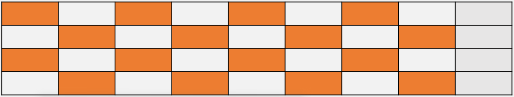

Subject Example¶
1절. Numpy_1장 과제
2절. 머신러닝 기초_2장 과제
3절. 회귀_3장 과제
1절. Numpy_1장 과제¶
사용 모듈(라이브러리)¶
Q1) 0 ~ 10 사이로 이루어진 정수를 랜덤하게 36개로 만들어라. 참고 : 사이즈 (36,)¶
res = np.random.randint(0, 11, size = 36)
res
# array([ 6, 8, 4, 2, 0, 6, 1, 7, 0, 7, 0, 7, 4, 7,
# 8, 7, 7, 9, 4, 4, 5, 3, 0, 10, 3, 6, 6, 10, 4, 9, 0, 5, 2, 8, 2, 3])
Q2) Q1에서 만들어진 배열을 2 _ 3 _ 6으로 shape 변경해라.¶
res_mod1 = res.reshape(2, 3, 6)
res_mod1
# array([[[6, 8, 4, 2, 0, 6],
# [1, 7, 0, 7, 0, 7],
# [4, 7, 8, 7, 7, 9]],
#
# [[4, 4, 5, 3, 0, 10],
# [3, 6, 6, 10, 4, 9],
# [0, 5, 2, 8, 2, 3]]])
Q3) Q1에서 만들어진 배열을 4 * 9로 변경해라.¶
res_mod2 = res.reshape(4, 9)
res_mod2
# array([[ 6, 8, 4, 2, 0, 6, 1, 7, 0],
# [ 7, 0, 7, 4, 7, 8, 7, 7, 9],
# [ 4, 4, 5, 3, 0, 10, 3, 6, 6],
# [10, 4, 9, 0, 5, 2, 8, 2, 3]])
Q4) 각 원소에 +4를 한 후 transpose를 이용하여 9 * 4로 변경해라.¶
res_plus4 = res_mod2 + 4
res_plus4 = res_plus4.T
res_plus4
# array([[10, 11, 8, 14],
# [12, 4, 8, 8],
# [ 8, 11, 9, 13],
# [ 6, 8, 7, 4],
# [ 4, 11, 4, 9],
# [10, 12, 14, 6],
# [ 5, 11, 7, 12],
# [11, 11, 10, 6],
# [ 4, 13, 10, 7]])
Q5) Q3, Q4의 내적을 구해라.¶
res = res_mod2 @ res_plus4
res
# array([[342, 318, 323, 298],
# [406, 630, 496, 505],
# [351, 436, 411, 339],
# [334, 453, 347, 475]])
Q6) Q3의 원소 중 다음 색을 칠해진 부분만 배열 슬라이싱하여 4 * 4 행렬로 만들어라.¶

temp1 = res_mod2[0, :8:2]
temp2 = res_mod2[1, 1:9:2]
temp3 = res_mod2[2, :8:2]
temp4 = res_mod2[3, 1:9:2]
np.vstack((temp1, temp2, temp3, temp4))
2절. 머신러닝 기초_2장 과제¶
Iris 데이터를 이용하여 머신러닝 방법의 예측 비교¶
- 베이즈 정리 (from sklearn.naive_bayes import GaussianNB)
- 결정 트리(from sklearn.tree import DecisionTreeClassifier)
- 아다부스터 (from sklearn.ensemble import AdaBoostClassifier)
사용 데이터 셋 라이브러리¶
방법 1 - Class 활용¶
from sklearn import datasets, metrics
from sklearn.model_selection import train_test_split
from sklearn.naive_bayes import GaussianNB
from sklearn.tree import DecisionTreeClassifier
from sklearn.ensemble import AdaBoostClassifier
import matplotlib.pyplot as plt
class ModelComparator:
model = [GaussianNB(), DecisionTreeClassifier(), AdaBoostClassifier()]
def __init__(self, X, y):
self.X_train, self.X_test, self.y_train,self.y_test = train_test_split(X,y,test_size=0.2,random_state=4)
def compare_model(self):
for m in self.model:
m.fit(self.X_train, self.y_train)
print("Model: ", m, ", Score:", metrics.accuracy_score(self.y_test, m.predict(self.X_test)))
# iris data
iris = datasets.load_iris()
X = iris.data
y = iris.target
irisCompare = ModelComparator(X, y)
irisCompare.compare_model()
# digit data
digit = datasets.load_digits()
X = digit.data
y = digit.target
digitCompare = ModelComparator(X, y)
digitCompare.compare_model()
방법 2 - 함수 활용¶
# 데이터 분할
def load_data():
iris = datasets.load_iris()
X = iris.data
y = iris.target
return train_test_split(X, y, test_size=0.2, random_state=4)
# 모델 생성 및 학습
def model_prediction(model, X_train, X_test, y_train, y_test, title):
model.fit(X_train, y_train)
y_pred = model.predict(X_test)
score = metrics.accuracy_score(y_test, y_pred)
print(title, score)
def main():
X_train,X_test,y_train,y_test = load_data()
model = KNeighborsClassifier(n_neighbors = 6)
model_prediction(model, X_train,X_test,y_train,y_test, "Result Of KNeighborsClassifier():")
model = GaussianNB()
model_prediction(model, X_train,X_test,y_train,y_test, "Result Of GaussianNB():")
model = DecisionTreeClassifier()
model_prediction(model, X_train,X_test,y_train,y_test, "Result Of DecisionTreeClassifier():")
model = AdaBoostClassifier(algorithm = 'SAMME')
model_prediction(model, X_train,X_test,y_train,y_test, "Result Of AdaBoost():")
if __name__ == "__main__":
main()
3절. 회귀_3장 과제¶
선형 회귀 문제¶
사용 라이브러리¶
import pandas as pd
import matplotlib.pyplot as plt
from sklearn.linear_model import LinearRegression
남 / 여 데이터 분리¶
# 남 / 여 데이터 분리
insurance = pd.read_csv("insurance.csv")
female_data = insurance[insurance['sex'] == 'female']
male_data = insurance[insurance['sex'] == 'male']
Q1 - 나이 vs 요금 회귀 분석¶
# 여자의 나이와 요금
female_age = female_data[['age']]
female_charges = female_data['charges']
model_female_AC = LinearRegression().fit(female_age, female_charges)
# 남자의 나이와 요금
male_age = male_data[['age']]
male_charges = male_data['charges']
model_male_AC = LinearRegression().fit(male_age, male_charges)
# 여자
print("그래프 기울기(W)_여자 : ", model_female_AC.coef_[0])
print("그래프 절편(b):_여자 : ", model_female_AC.intercept_)
# 그래프 기울기(W)_여자 : 257.0114899339647
# 그래프 절편(b):_여자 : 2416.8485216856316
# 남자
print("그래프 기울기(W)_남자 : ", model_male_AC.coef_[0])
print("그래프 절편(b)_남자 : ", model_male_AC.intercept_)
# 그래프 기울기(W)_남자 : 260.68133921066124
# 그래프 절편(b)_남자 : 3811.773852346043
Q2 - 체질량 vs 요금 회귀 분석¶
# 여자의 나이와 요금
female_bmi = female_data[['bmi']]
female_charges = female_data['charges']
model_female_BC = LinearRegression().fit(female_bmi, female_charges)
# 남자의 나이와 요금
male_bmi = male_data[['bmi']]
male_charges = male_data['charges']
model_male_BC = LinearRegression().fit(male_bmi, male_charges)
# 여자
print("그래프 기울기(W)_여자 : ", model_female_BC.coef_[0])
print("그래프 절편(b):_여자 : ", model_female_BC.intercept_)
# 그래프 기울기(W)_여자 : 297.11767929902027
# 그래프 절편(b):_여자 : 3543.8124859186573
# 남자
print("그래프 기울기(W)_남자 : ", model_male_BC.coef_[0])
print("그래프 절편(b)_남자 : ", model_male_BC.intercept_)
# 그래프 기울기(W)_남자 : 477.07833577154895
# 그래프 절편(b)_남자 : -805.5451651920757
로지스틱 회귀 문제¶
사용 라이브러리¶
from sklearn.model_selection import cross_val_predict
from sklearn.metrics import confusion_matrix, ConfusionMatrixDisplay
import matplotlib.pyplot as plt
from sklearn.linear_model import LogisticRegression
import pandas as pd
Q1 - 혼동행렬 생성 및 교차 검증 문제¶
col_names = ['pregnant', 'glucose', 'bp', 'skin', 'insulin', 'bmi', 'pedigree', 'age', 'label']
pima = pd.read_csv("diabetes.csv", header = 0, names = col_names)
feature_cols = ['pregnant', 'insulin', 'bmi', 'age', 'glucose', 'bp', 'pedigree']
X = pima[feature_cols]
y = pima.label
# cross validation 테스트 + 5-fold 교차 검증(80 : 20)
LR = LogisticRegression(max_iter = 200)
y_pred = cross_val_predict(LR, X, y, cv = 5)
cm = confusion_matrix(y, y_pred)
ConfusionMatrixDisplay(cm).plot()
tn, fp, fn, tp = cm.ravel()
print("TP = {}\nFN = {}\nFP = {}\nTN = {}".format(tp, fn, fp, tn))